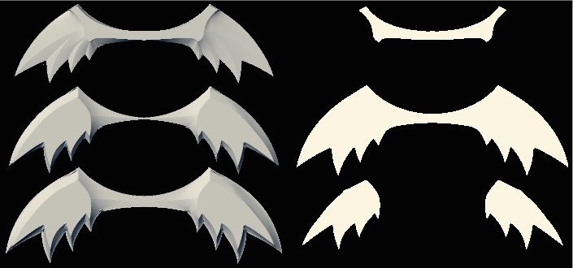

Molding and Casting
I began this week curious about casting interlocking objects. If a two-piece mold for a ring had a slit through one side and a hole in the middle, you'd be able to slot a previously-cast ring inside the mold and cast a new ring through it. You could build up chains of rings this way.
Now, this would be about the most laborious conceivable way to make a basic chain. But since you're casting it anyway, you could make the chain links more complicated. They could have filigree. They could twist around. They could be inscribed with letters.
Or they could be dragons.
I went with dragons.
I began with sketching and clay modeling. Each dragon would bite the tail of the dragon in front of it. I figured the piece should only be a couple inches long since I wanted to chain multiple together, but that the cast had to be a few millimeters thick at every point. The holes where the chains linked therefore had to be at least half a centimeter wide, because there'd need to be some gap for the mold into which the new dragon was being cast. Figuring out dimensions where the mouth and tail had large enough holes without throwing off the overall proportions took some playing with.
Then it was off to CAD. By this point I was familiar with the downsides of Antimony for modeling organic forms, but I was tight on time and hadn't gotten around to picking up a tool like Rhino yet so I went for it in Antimony anyway. I figured it would take a few more hours than the equivalent work in Rhino, but less than the cost of learning a new tool. That was a mistake.
Two twelve-hour sprints later I had my Antimony'd dragon. The Antimony graph was over 300 nodes - roughly 200 for the dragon and 150 for modeling the cut-wax positives for mold-making.
The graph's top row makes the dragon and the bottom row the mold parts.
I'd started with the dragon body. I first played with using repel and attract functions as control points, thinking I could arrange a dozen or so to bend a cylinder around arbitrarily. This didn't work though - I'd been thinking of simultaneously repelling and attracting a model from a set of points, but instead I'd have to pipe the successively deformed shape through one deformation at a time, and this both reduced the complexity I could specify and broke the per-point modularity I had hoped for. Retrospectively it might have been faster to pause and learn Antimony function strings so I could write my own functions here, another skill I've been meaning to learn, but as with the decision against trying Rhino, I decided in the moment to power through with what I knew.
Abandoning the repel/attract paradigm, I cylinder-wrapped a cylinder to make an initial corkscrewing body. The tail loop needed to be centered, though, and the head similarly, so I added bends to the tips of the to-be-wrapped cylinder to pull it radially inward. I then added axially-aligned attractions to the post-wrapped cylinder to taper the body's thickness near the ends - this was an important step towards producing an organic feel.
The tail was a blend of a torus and a square-edged ring. As with the body, an axially-aligned attract naturalized the object.
The head was a lot of hacks. It took a long time. It ended up being a bunch of rounded cubes and cylinders attracted, repelled, blended, and differenced until it stopped looking horrible.
The wings were layered additions and subtractions of circles. Having built the wing outline, a horizontal 2D slice of the middle the wing, I shrunk it down two different ways to form the wing bottom and top surfaces. I lofted each from the wing outline and glued them together.
Having made the dragon, I now had to construct positives I could mill into wax and create molds from. This was a laborious process given the complexity of the dragon profile. First, I produced a surface wave that wound up and down in tandem with the dragon body. I built flat platforms through the center of the wings, the tail, and the head, and I added a funnel at the dragon's mouth where metal would be poured into the mold. I added an air clearance channel on the dragon's nose, a hole where one dragon could bite through the tail of the next, and a couple of mold through-holes for alignment. I cut out a triangle where the dragon's mouth hole would be and built wax models to shape the small mouthpiece mold that would rest inside. For the bottom, I unioned these together along with surrounding walls; for the top, I inverted the surface and did the same. I combined these supports with the dragon and exported bottom, top, and mouthpiece models as heightmaps.
In the lab we had 5"x10"x1.5" blocks of machinable wax. My dragon model fit into a 3.5"x3.5"x1.5" space. I mounted a wax block into our Roland mill and sent a 1/8" rough cut for the bottom dragon half into it. It took around an hour. I started making a finish cut with a 1/16" bit but the flutes of the only bit in the lab were only a couple millimeters long before widening into the neck. This ran afoul of many parts of my design: the posts sticking up for through-holes would get knocked off, and the vertical walls in various places would rub against the bit when it tried to mill next to them.
I later realized the right tactic was to do a finish cut with the 1/8" bit and high stepover, but instead I whited out buffer regions around the posts and sent the 1/16" in for the finish cut. It took over an hour for each half. The bit still chafed against walls and couldn't reach inside around the tail hole. I'd also done a poor job sizing my buffers so most of the posts got knocked over anyway. I used a soldering iron and extra wax shavings to melt the posts back in place and did my best to carve out the unexcavated regions of the tail.
Now I was ready to make the primary molds. (I'd go back later for the mouthpiece waxes.) I mixed up some Oomoo silicone compound and poured it into each mold half. I'd done a poor job mixing it and let lots of air in so I put it in a vacuum tube to suck out the bubbles. It's better to do this to the mixed Oomoo before pouring it into the wax, but I learned this later. The vacuum tube made the silicone froth up for awhile but eventually bubbles stopped emerging. I wiped away silicone from the tops of the poles so they'd form complete through-holes and I had to orient in place a pole that had snapped off. Then I let everything sit overnight.
The next day I removed the mold halves from the wax. Given the wax's defects, the molds had come out nicely. When I pieced them together, however, they didn't nest well. The interface between the molds had lots of square corners, and pushing these into one another worked poorly. There also may have been places one mold's interface extended into the other mold's territory from my solder-iron-editing on the wax.
I went back and cut the mouthpiece waxes. Here again I whited out regions around walls for the final cut.
At this point there were half a dozen mistakes I wanted to correct. I went back to Antimony and deleted the post in the dragon's tail so the tail could be fully excavated by the mill. I centered the surface plane through the tail so equal amounts would show up on the top and bottom molds. The posts had broken off easily, so I added chamfers to their bases. I removed the arbitrary height changes of the mold interface near the wing tips since these had degraded mold interface matching (I'd originally thought they'd help with alignment).
I milled new wax, this time using the 1/8" bit with a 90% stepover for the finish cut. Instead of the Roland mill, I used the tabletop shop bot, which was much faster: 6 minutes for a rough cut, 40 minutes for a finish cut. Something was miscalibrated on the finish cut, however, and the shop bot reduced the z range to 50%. I examined all my settings closely and nothing on my end suggested reason for the mistake. At this point I was out of time to start again, so I gave up on creating a nicer wax and cast from the molds I already had.
The casting was quick. I used a bismuth-tin alloy that melted in a 400 degree oven and I poured it into the mold. I'd never made the dragon mouthpiece, and the mold halves did not register well, but a solder iron let me edit mistakes until it worked out.


If you're interested, here's the Antimony file for the dragon.